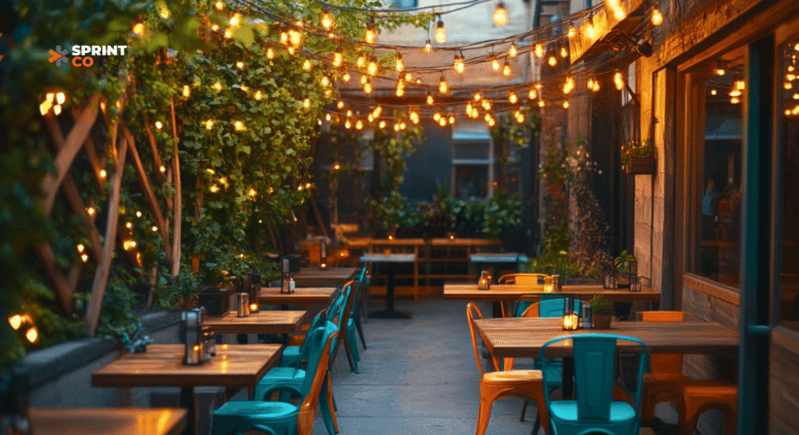
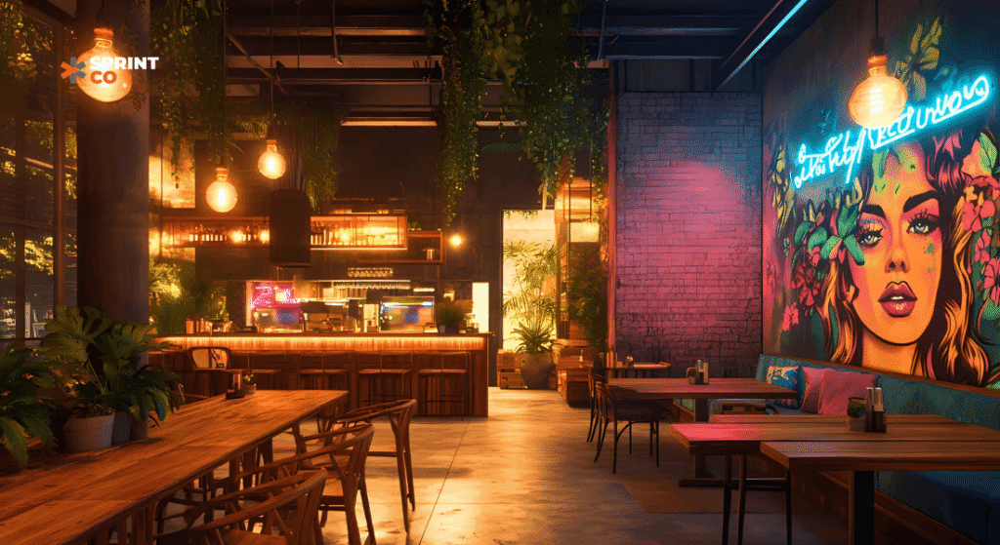
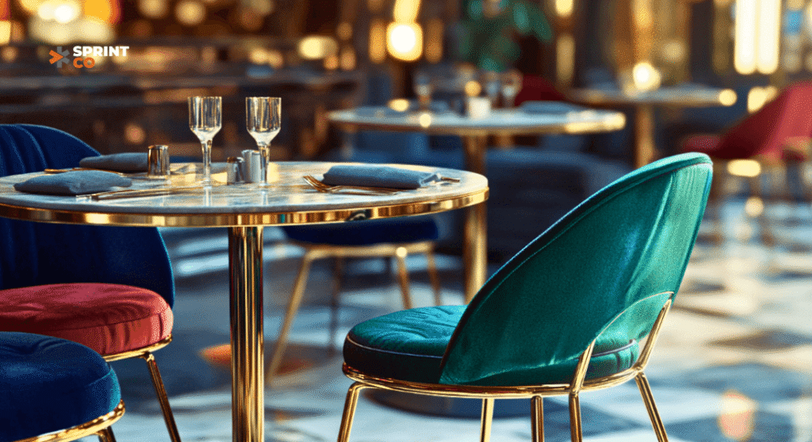
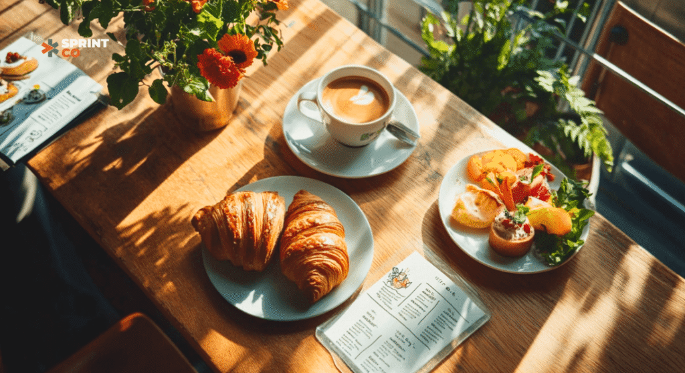
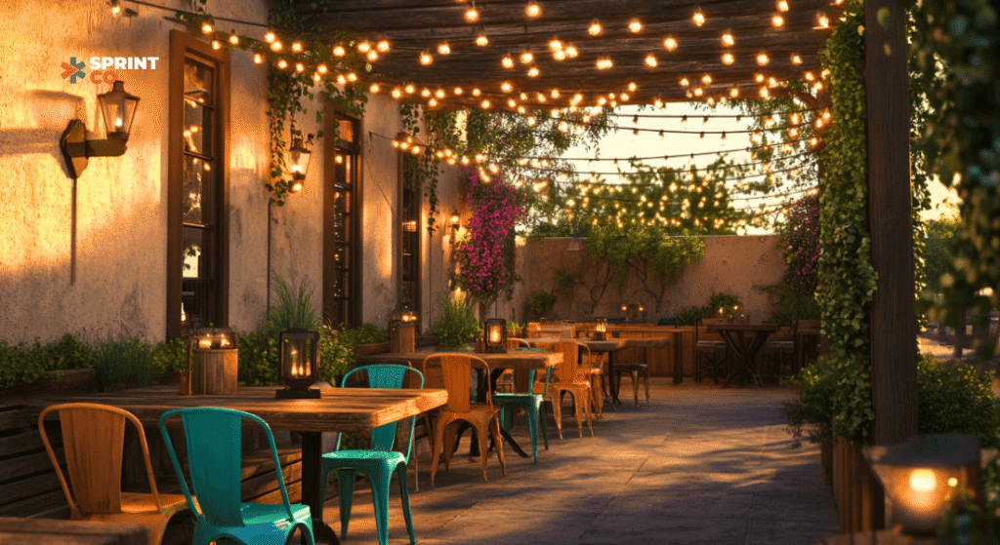

Creating Instagram-worthy restaurant designs is the secret to capturing the attention of Millennials and Gen Z. Whether it’s a budget friendly outdoor restaurant design, a striking interior aesthetic, or a creative restaurant menu design, this tech-savvy audience is all about experiences that they can share online. By incorporating thoughtful details like commercial dining chairs and partnering with skilled restaurant design firms, you can craft a space that not only looks great but also drives footfall.
Here’s how to design spaces that resonate with this visually-driven audience while maximising your appeal.
1. Transform Your Outdoor Space on a Budget

Outdoor dining spaces are in high demand, especially among Millennials and Gen Z. With some affordable yet impactful touches, you can elevate your low-budget outdoor restaurant design to attract these customers.
- Accent Lighting: Use string lights or lanterns to create an inviting ambience for evening diners.
- Natural Aesthetics: Incorporate plants, wooden furniture, or rustic decor for an organic feel.
- Bold Furniture: Choose eye-catching, weather-resistant seating that pops on camera.
These outdoor elements not only enhance the visual appeal but also make your space perfect for Instagram moments.
2. Vibrant and Authentic Interior Designs

Interior design plays a pivotal role in setting the mood for your restaurant. Millennials and Gen Z gravitate toward vibrant, unique spaces that make their visit feel like an experience.
- Statement Walls: Create Instagrammable backdrops with murals or patterned wallpapers.
- Eco-Friendly Accents: Incorporate sustainable materials to appeal to socially-conscious Gen Z diners.
- Neon Signs: Add quirky or inspirational quotes in neon for a fun, modern vibe.
Collaborating with an interior designer for cafes or experienced restaurant design firms can help you strike the right balance between aesthetics and functionality.
3. Choose Commercial Dining Chairs with Style

Your seating choices can significantly impact the overall vibe of your restaurant. Commercial dining chairs are not just functional—they can be a design statement.
- Mix and Match: Use different chair styles and colours for a playful, dynamic look.
- Comfort Meets Trend: Opt for ergonomically designed chairs that still fit your aesthetic.
- Durable Yet Stylish: Invest in high-quality materials that can withstand wear and tear while maintaining visual appeal.
4. Leverage Creative Restaurant Menu Design

An eye-catching restaurant menu design can set the tone for your guests’ experience. For Millennials and Gen Z, the menu is often the first thing they share online.
- Bold Typography: Use fonts and colours that match your brand’s aesthetic.
- Visual Elements: Add icons, illustrations, or food photos to make your menu engaging.
- Special Features: Highlight “must-try” dishes or Instagram-worthy items with special tags or sections.
A beautifully designed menu reinforces your brand identity and encourages guests to post their dining experience.
5. Focus on Gen Z-Friendly Restaurant Designs

Gen Z values authenticity, creativity, and purpose. To win their loyalty, incorporate elements that reflect these traits.
- Interactive Features: Add photo booths or selfie stations to make your space more engaging.
- Local Art and Culture: Showcase local artists’ work or themes inspired by your city.
- Tech Integration: Offer QR code menus or app-based loyalty programs to align with their tech-savvy preferences.
6. Why Partner with Restaurant Design Experts?
Partnering with professional restaurant design firms or an interior designer for cafes can make all the difference in creating spaces that resonate with your target audience. These experts bring a wealth of knowledge about trends, materials, and layouts that work best for commercial spaces.
Conclusion
From crafting a stunning low-budget outdoor restaurant design to choosing stylish commercial dining chairs, every detail matters when it comes to attracting Millennials and Gen Z. By focusing on Instagram-worthy aesthetics, functional layouts, and creative you can create a dining experience that your audience will rave about.
Ready to transform your restaurant into an Instagram-worthy destination? Let SprintCo help you craft designs that capture hearts (and feeds). Contact us today to get started!
#Sprinco #QSRDesign #RestaurantDesign #InteriorDesign #Branding